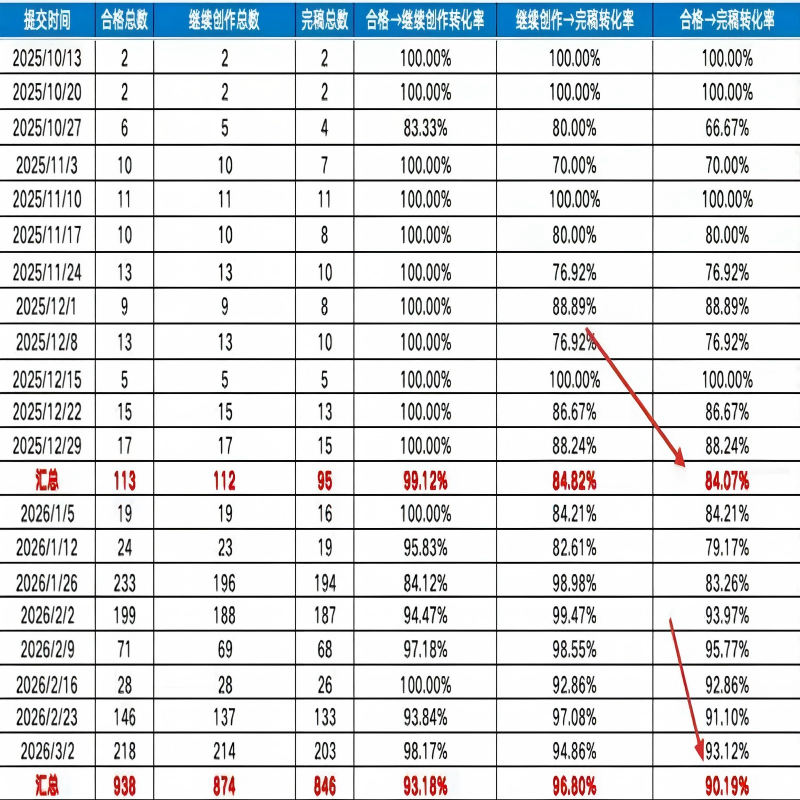
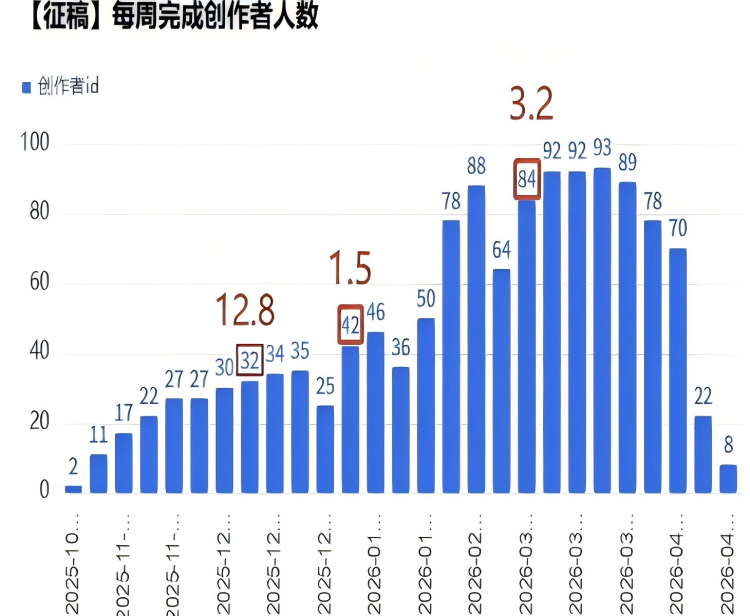
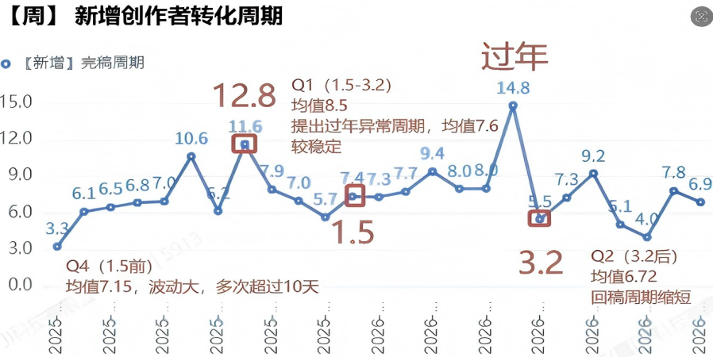
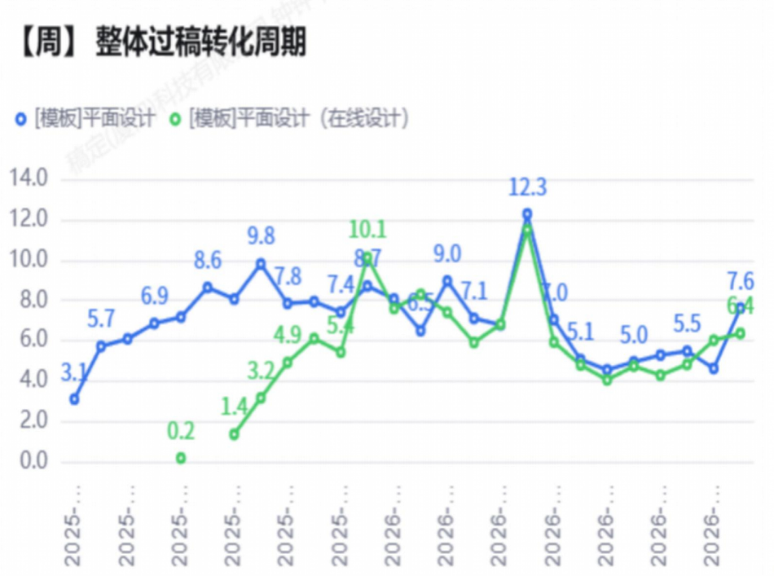
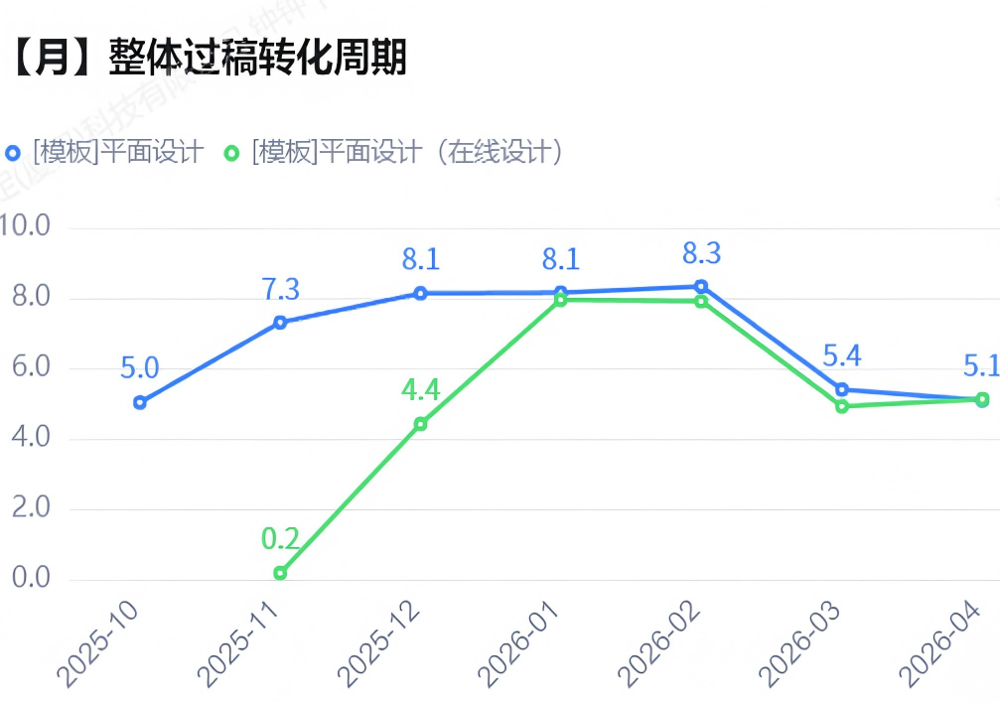
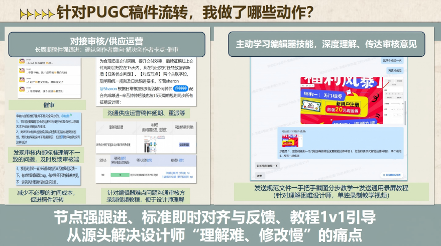
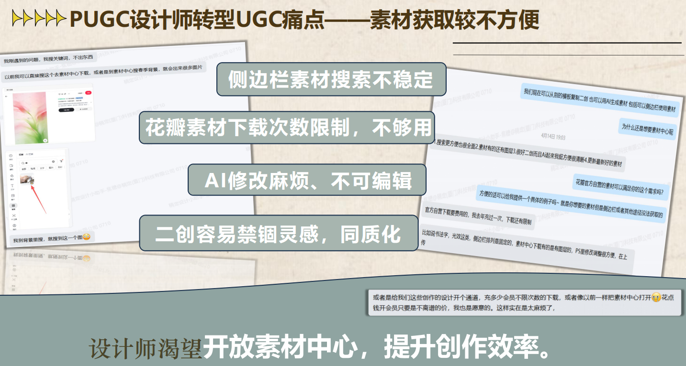
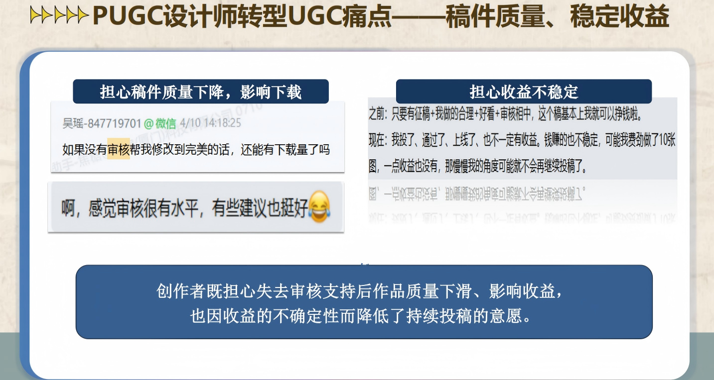
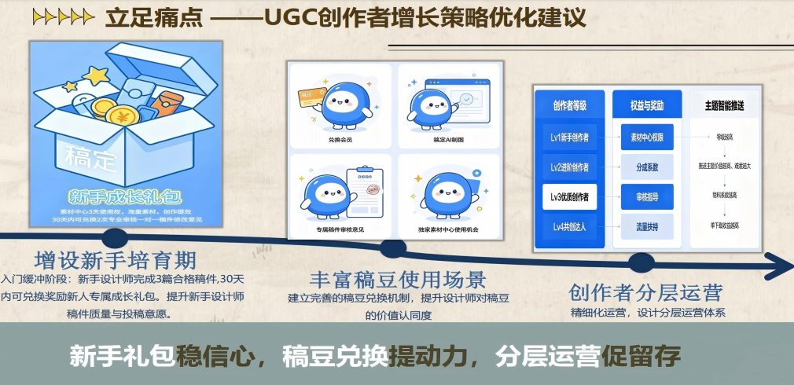

Self-Introduction & Personal Growth
集美大学
市场营销专业
4.09 / 5
营销数据分析(98) · CRM(95)
专业奖学金 ×8
全国文旅策划一等奖 · 品牌策划二等奖
志愿时长 182h
院学生会部长 · 三好学生 · 优秀学生干部
学习能力强
沟通能力强
责任心与执行力强
适应力强
目标导向
2025年12月，带着专业知识与校园经验，加入创作者运营实习
从被动执行者到能解决问题、能提效、能抗事的运营
工作环境与范围
面临的挑战
需要突破的方向
如何从被动执行者变成能解决问题、能提效、能抗事的运营？
行动与成长
截图定位法高效沟通
高密度复盘
用热爱驱动工作
主动补位
做会用工具的人
内容能力提升
越主动，越收获；对每日工作进行高密度复盘、持续迭代
Work Performance
多位创作者反馈稿件驳回后，不清楚淘汰原因，改稿、重投无明确方向，无效投稿问题频发。
依托拒稿自查表帮助创作者精准改稿、减少无效投稿。主动引导稿件二次优化重投，盘活存量投稿内容，提升整体稿件合格率与内容质量。
4,326
1,104
5,401
1,935
Q1接手后整体投稿合格率上涨 12.07%
新增合格稿件中二次重新投稿的稿件约占 6.6% ｜ 沟通的淘汰稿件二次投稿合格率达 38.73%
基于拒稿自查表拓展修改意见，PUGC稿件合格率显著提升
2025Q4 · 接手前
84.07%
数据周期: 2025/10/13 ~ 2025/12/29（共12周）
总完稿 95 / 总合格 113
2026Q1 · 接手后 🚀
90.19%
数据周期: 2026/01/05 ~ 2026/03/02（共7周）
总完稿 846 / 总合格 938
完稿转化率显著提升，PUGC设计师合格→完稿转化率提升 6.12%
强跟进投稿各环节，切实提升稿件完稿转化率

Q1业务大规模扩招，新增 226名 设计师。新人普遍不熟悉平台规则与编辑器操作，大幅增加稿件制作时长异常、完稿流失风险。
精细化运营稿件合格→继续创作→完稿全链路，通过答疑赋能、节奏管控、问题兜底，在创作者体量暴涨的压力下，稳住并提升整体完稿转化率，保障业务产能及时交付。
Q1每周完成创作者人数总数较Q4翻倍
Q1新增设计师完稿周期较Q4稳定
Q2较Q4完稿周期缩短0.43天
Q1 每周完成创作者人数总数较 Q4 翻倍

Q1 新增设计师完稿周期较 Q4 稳定；Q2 较 Q4 完稿周期缩短 0.43 天

强跟进稿件流转情况，新手设计师次日触达，回稿平均周期约缩短 3 天



Current Work & Reflections
原PUGC征稿模式流程复杂、门槛较高，Q2全面推进共创模式，规避原有弊端的同时从一次性买断转为分成收益模式。
通过精细化社群运营，激活新增/潜在创作者，尤其是PUGC优质设计师。推动共创模式落地，实现投稿量与稿件质量双提升。
沟通设计师
164名
已转化
94名
转化进度
57.31%
针对未投稿优质设计师触达3次，强PUSH PUGC设计师
70名设计师未转化，占比 42.68%
担心收益不稳定
现有投稿教程为编辑器教程，觉得编辑器难；告知可以用PS制作后，psd解析需要会员，对未知模式受益存疑；而ps本地元素上传则比较麻烦。
近期忙/生病等
59名优质设计师已经长期不活跃（最近一次投稿日超过30天）
按共创模式分成方法计算、分析其过往PUGC稿件的下载收益；如收益为负值则放排行榜截图、优质保底等进行沟通；后续建议推出新人成长礼包。
提供PUGC征稿的1天模版会员给设计师试用，确保设计师来参与活动，推断体验效果好会持续参加活动。
持续跟踪，过一周再次触达并及时记录，对情况进行复盘。持续跟踪优质设计师，针对近60天未活跃设计师进一步触达。



Positioning & Future Plans
核心目标
创作者激活、活跃、留存，实现平台与创作者双赢
核心动作
全链路运营 · 分层社群维护 · 创作者赋能 · 数据驱动闭环优化
聚焦"新增、潜在创作者激活"
作为新增or沉睡设计师的成长陪伴官，实现创作者激活、活跃、留存
更加专业
更加深入
更加规模化
更加高效协同
学会与AI共舞
理解算法，学会产品质检
提升认知视角、策略性思维
永远不停下学习的脚步
善于提问
学会有效地复盘、更深地思考
结合5月激励沟通近60天内活跃的设计师，1个月内冲刺PUGC优质设计师转化达80%。精细化运营，降低创作者流失率。
3个月内制定分层运营标准和策略。
实时关注设计师反馈，及时调研与复盘未持续投稿原因，完善新人投稿帮助中心，实现40%以上新增创作者持续投稿量大于5的目标。
搭建可复用的共创创作者运营SOP，实现规模化转化。
通过持续的社群赋能、激励体系优化与内容引导，推动社群向创作者自主活跃转型。
实现创作者规模与优质内容占比同步提升，支撑生态健康发展。
Thank You
创作者运营实习生：钟钟
2026年5月